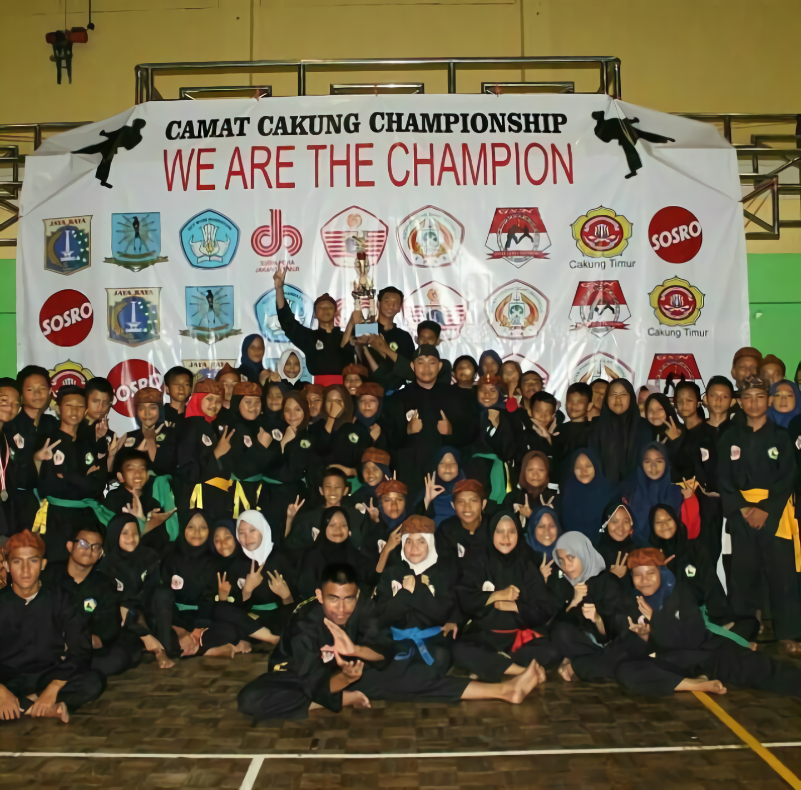
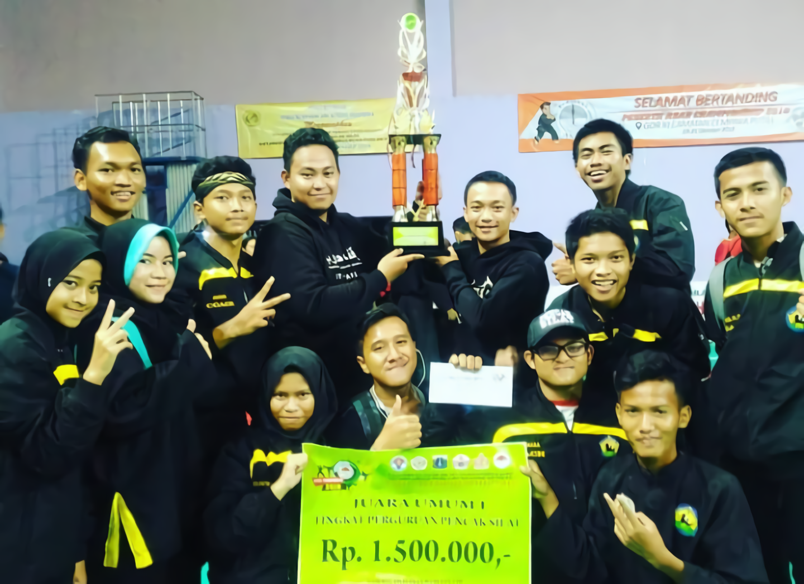
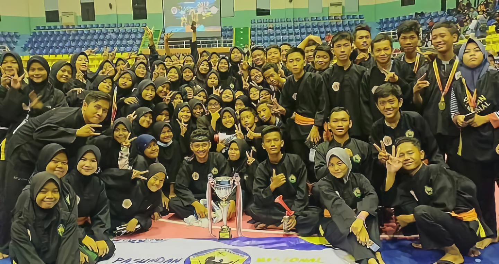
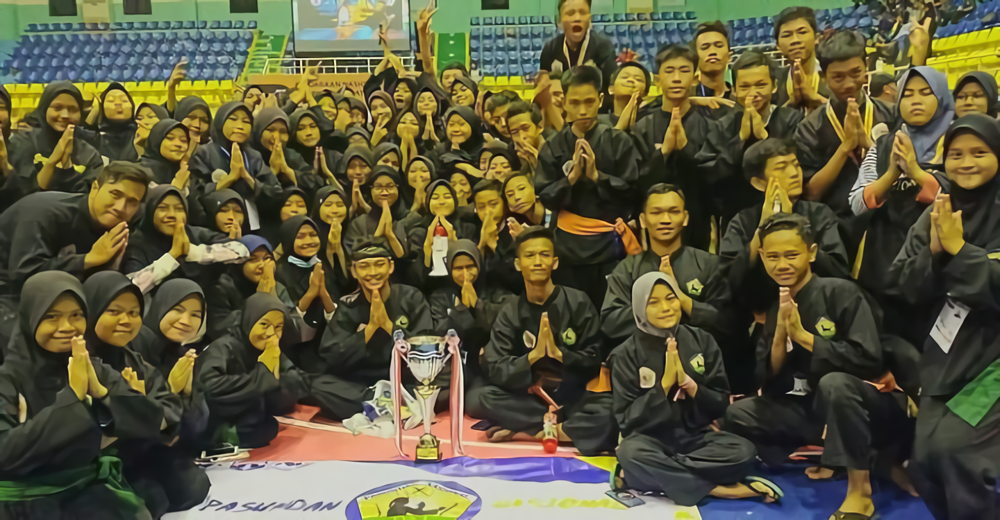
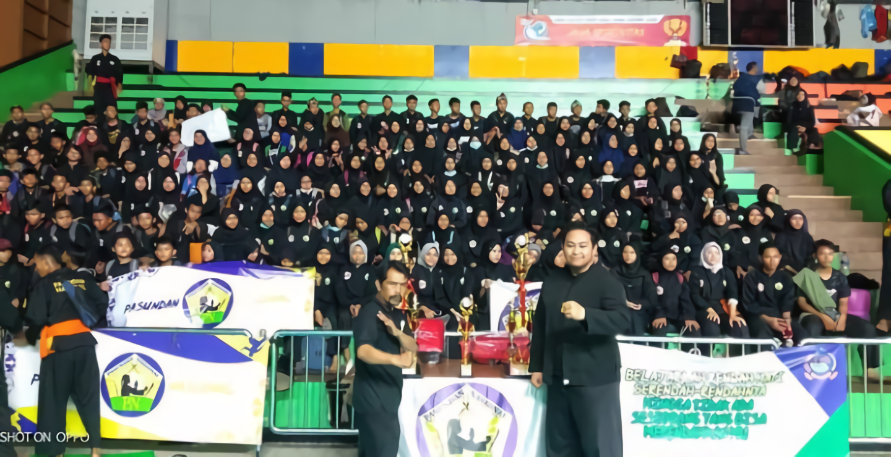
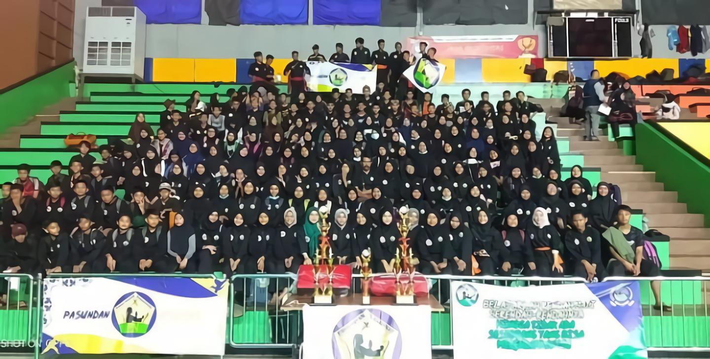

Pasundan Nasional
A. SEJARAH SINGKAT PASUNDAN NASIONAL
Perguruan Pencak Silat PASUNDAN NASIONAL yang didirikan pada tanggal 1 April 2017 dibawah kepemimpinan Triyadi Ramadhan. Cukup berkembang pesat di sekolah-sekolah di DKI Jakarta, Bekasi dan Jabodetabek serta telah mendapat perhatian masyarakat dengan keberhasilannya mencetak kader atlet berprestasi di ajang O2SN maupun kejuaraan yang lainya.
Dengan Pelatih yang berkompeten dan berkualitas karena selalu di training oleh Guru Besar PASUNDAN NASIONAL dan Ikatan Pencak Silat Indonesia (IPSI) , dan beberapa pelatih adalah mantan atlet yang tidak dapat dihiraukan kemampuannya, oleh sebab itu maka dengan perkembangan beladiri di Indonesia dan melestarikan Pencak Silat, maka Perguruan Pencak Silat PASUNDAN NASIONAL akan terus berusaha berkembang dan selalu berbenah untuk mengikuti perkembangan jaman.Menyadari pentingnya mengembangkan peranan Pencak Silat untuk ikut mengisi kemerdekaan maka di rasa perlu dibentuknya satu organisasi yang menamakan dirinya Perguruan PASUNDAN NASIONAL
B. ALIRAN DAN TINGKATAN SABUK
Dalam Persaudaraan Silat Olahraga Prestasi PASUNDAN NASIONAL beladiri pencak silat dijadikan dasar dalam tahap pengajaran dan atas dasar 3 Aliran Besar Yaitu: Betawi, Mataram, dan Sunda. Tingkatan sabuk di Perguruan pencak silat nasional PASUNDAN NASIONAL dimulai dari:
a. Selendang Putih
b. Selendang Kuning
c. Selendang Hijau
d. Selendang Biru (Asisten Pelatih)
e. Selendang Coklat (Pelatih Muda)
f. Selendang Coklat Logo Golok (Aliran Betawi)
g. Selendang Coklat Logo Keris (Aliran Mataram)
h. Selendang Coklat Logo Kujang (Aliran Sunda)
i. Selendang Merah Logo 3 Senjata ( Pendekar )
C. IKRAR PASUNDAN NASIONAL
1. Selalu menjalankan ibadah dengan ikhlas karena tuhan semata
2. Mengabdi kepada tuhan, bangsa dan negara serta membela keadilan dan kebenaran
3. Menghormati sesama anggota perguruan, orang tua, dan guru.
4. Mencari perdamaian dan kasih sayang serta menjauhi perselisihan dan permusuhan
5. Patuh dan taat pada perguruan serta percaya kepada kebijaksanaan pimpinan
6. Dengan iman dan akhlak saya menjadi kuat, Tanpa iman dan akhlak saya menjadi lemah
7. Siap mengembangkan dan membanggakan perguruan PASUNDAN NASIONAL
D. PENCAPAIAN PERGURUAN PASUNDAN NASIONAL DALAM BEBERAPA TAHUN TERAKHIR
1. Juara Umum 1 Piala Camat Cakung SeJakarta Timur

2. Juara Umum 1 Asad Championship Tingkat Nasional

3. Juara Umum 1 JKTC 12 Tingkat Nasional


4. Juara Umum 1 Satria Timur Open Tingkat Nasional

